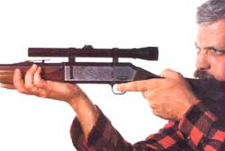
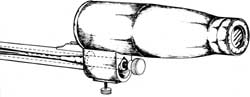
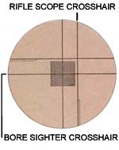
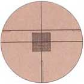
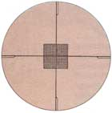
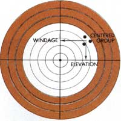

Confidence in your equipment can be a key to more successful hunting trips.
The hunter, curled fetuslike, presses down into the Space Blanket that serves to separate him from the damp depression overlooking the field. It's two hours into his third and final day. The expectation that once helped keep him still and silent, the absolute belief in deer, has long gone. Nothing supports him in the face of stiffness and cold, nothing fights off the nagging whispers that say "quit," or "for God's sake, at least stand and stretch" - nothing but the grim determination to go out doing this right, to give no aid to an unfriendly fate.
Three hours. His body heat has melted the snow; wet fingers stretch over the lip of the ground cover. He closes his eyes against the internal taunts. When he opens them, three bucks are walking stiff-legged into the field, a scant 100 yards distant.
No trouble with control now. The gun comes up to rest on bent knees. A deep breath as the scope fills with deer, a half breath out; the crosshairs drop and hold behind the shoulder of the biggest, rest steady as the trigger creeps toward the always surprising shot. There!
But the buck isn't down. The trio mill about in brief confusion and then stretch toward a windrow of trees. He sweeps the scope with them, less steady now, but still vacillating within the area of clean kill. A second shot. No tail drop, no sudden stumble or twitch, no sound of a bullet strike.
He's on his feet now, aiming only at the middle of the big buck's body. Shot. Shot. Shot. And the snicker of a firing pin on an empty chamber. Loading on the run, he finds the deep-driven tracks of panic, follows them to the woods. No blood, no hair. Five misses?
A shell in the chamber, past believing anything now, he takes a careful rest and aims at a stump-center knot 30 yards off. Steady, squeeze, and bark jumps a full six inches high, three to the right. He looks down at the expensive rifle, feeling betrayal and the slow spread of guilt.
It was spot-on last season.
Missed shots or, worse yet, poor shots that result in the escape of a badly wounded animal can often be traced to either improperly sighted rifles or firearms that have had their sights jarred out of adjustment. Of course, the major cause of poor shooting is a shortage of hunter ability; no scope, regardless of how well it's sighted-in, will compensate for a lack of familiarity with the gun. The answer here is to practice, and then practice some more.
On the other hand, a scope that's out of adjustment can frustrate the most experienced marksman. So take the time to check a sighted-in rifle before each hunting season (and then practice with it); do the same after traveling to a distant hunt, or after a day in steep or brushy country that could leave your rifle feeling the same sort of knocks that can make a quiet evening in camp seem like a little bit of heaven. More important still, never assume that a newly purchased gun is right, whether bought used or set up by sporting-goods store staff: You owe it to yourself, and to the game you intend to hunt, to burn enough powder to assure yourself that the job has been done correctly.
Although it's possible to do the job without a bore sighter, I've come to consider this tool (Fig. 2) indispensable when setting up a scoped firearm. This device allows the rifleman, without even loading a shell, to align the scope with the bore of the rifle. A boresighted firearm will typically be "on the paper"-that is, it should hit somewhere on a standard-sized rifle target-at 100 yards. This can save a number of spent shells during the adjustment process. It is, however, only a preparation for final zeroing in.
To use a bore sighter, simply insert the appropriate rod (several will come with the tool) into the muzzle of your firearm, adjust the device until the calibrated lens is centered in front of the rifle scope, then secure the bore sighter in position by turning the knurled-head fitting to expand the rod within the bore. Now look through the scope toward a bright window or other source of light. The calibrations on the bore sighter will be superimposed over the crosshairs of the scope (Fig. 1). Simply adjust the scope until its crosshairs are centered on the bore sighter's checkerboard, and you'll have taken a giant step toward straighter shooting .
Punching Paper
The final stage of the sighting-in process can best be accomplished at a rifle range equipped with benches and good gun rests. Failing that, make up a few small cloth bags (about six inches square), stuff them with sand and use them to rest the rifle on while shooting.
FIG.3 ZEROING IN
Set up a target at 100 yards if you're sighting-in a deer rifle, or at 50 yards if you're using a .22. (If you're not at a range, make absolutely certain that you've got a completely safe backdrop behind your target, such as a high, thick dirt bank.) Then - wearing ear and eye protection - rest the gun securely and squeeze off three careful shots at the center of the target. The bullet holes should group at some point on the target paper (Fig. 3). Measure the distance from the middle of your grouping to the bull's eye, figuring first the distance to the right or left of the target center (windage) and then that above or below the bull (elevation). Now adjust your sight or scope to compensate for the error. To do so, you'll have to know how the calibrations on the sight work. Many scopes adjust in clicks, each one equaling a change in point of impact of one inch at 100 yards. With the adjustment made, take another three careful shots. Your group should now be closer to the bull's eye. If it's not close enough to suit you, repeat the measurement, adjustment and three-shot-group process as many times as necessary; that is, until the rifle is dead-on.
(Note: Many hunters sight-in deer rifles to shoot about two inches high at 100 yards, thus enabling the shooter to keep the impact point within a clean kill zone at longer ranges without having to aim high to account for bullet drop. Before doing this, check the ballistics of your rifle-and-cartridge combination - most any gun-shop owner will have a chart - to determine how far you can expect the point of impact to change over a given distance.)
Once carefully sighted-in, your rifle will give you the best it's capable of. Your next step is to get in enough shooting time with the firearm, at various distances and from sitting, prone and offhand (standing) positions, to make sure that you're able to contribute an equal (well, nearly so) ability. With that done, you can take to the field with calm confidence, which is probably the most important hunting tool of all.
|
 Any scope and rifle combination need to be fine- tuned if it's to perform well. |
 Fig 2. Bore Sighter Aligned with Barrel. |
 FIG.1 USING A BORE SIGHTER |
|
 SCOPE ADJUSTED FOR WINDAGE |
 SCOPE AND BORE SIGHTER ALIGNED |
 FIG.3 ZEROING IN |